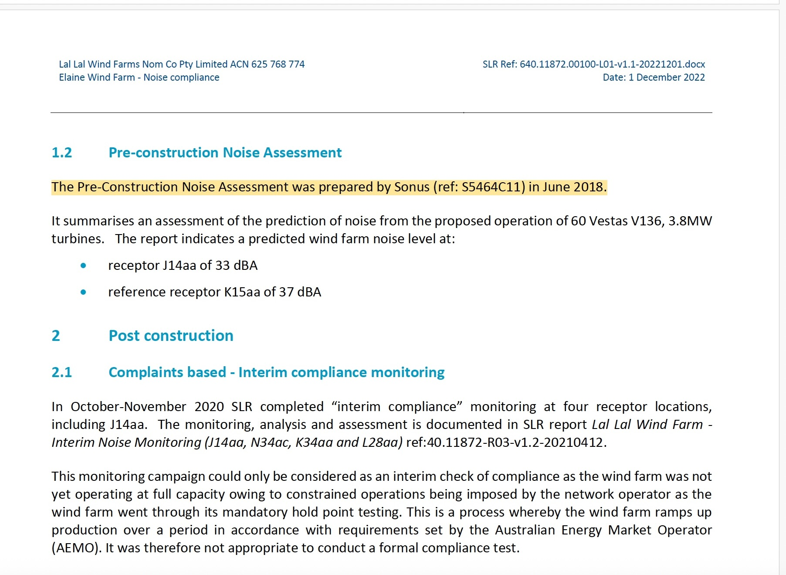
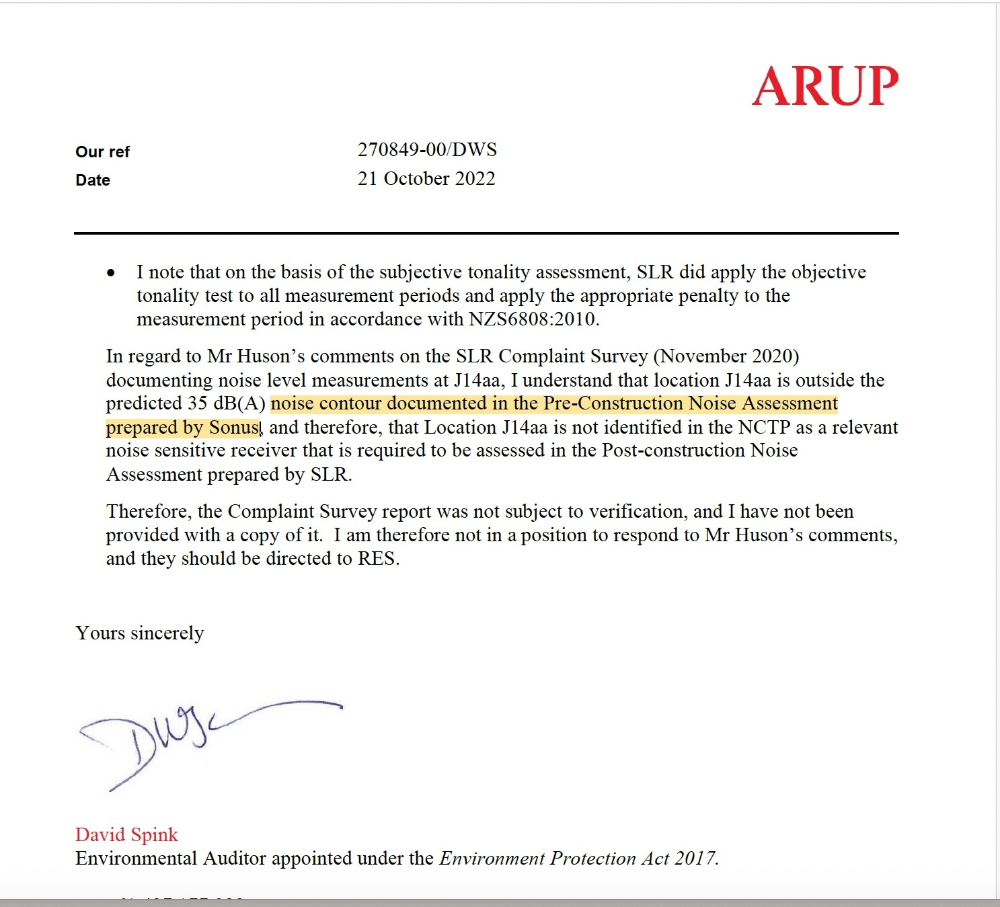
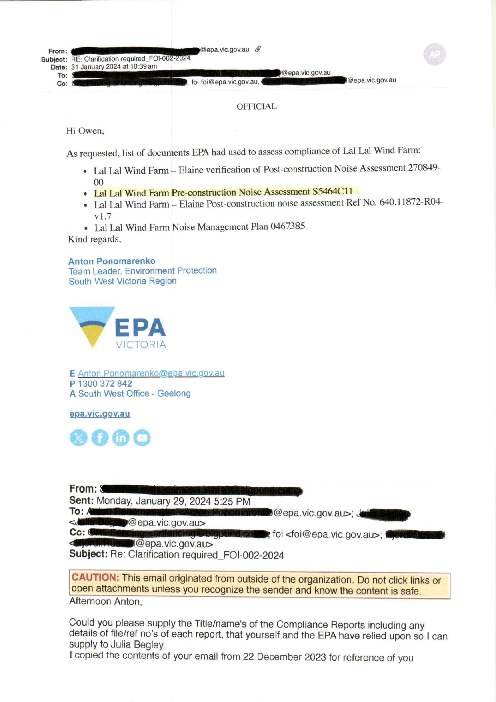

Pre-construction Acoustic Assessments
How the principal planning-stage and pre-construction acoustic documents developed, were independently reviewed, and were later referenced within the post-construction and regulatory record.
Understanding the documentary pathway
This page explains how the principal pre-construction acoustic documents relate to one another. It does not seek to determine the correctness of any assessment. It identifies the purpose of each document, the later documents that refer to it, and the present Freedom of Information record concerning associated Environmental Auditor material.
Authority and technical evidence
The governing framework comes from the Planning Permit, the applicable permit conditions, NZS 6808:2010 and the endorsed Noise Compliance Testing Plan. The acoustic reports explain, predict, assess or review technical matters within that framework; they do not replace the governing instruments merely because they express a technical opinion.
How the pre-construction record developed
The presently assembled record identifies several documents prepared for different purposes. They should be read in sequence rather than treated as interchangeable reports.
Planning-stage assessment
The earlier planning-stage acoustic assessment formed part of the project’s planning history and is later referred to by Sonus.
Background monitoring
Marshall Day Acoustics measured background sound and derived operational criteria at selected receiver locations.
Sonus prediction
Sonus prepared a new pre-construction predictive assessment for the proposed final turbine arrangement.
Auditor peer review
AECOM, supported by an EPA-appointed Environmental Auditor, reviewed the April 2018 Sonus assessment.
Later Sonus revision
Later SLR, ARUP and EPA material refers to a June 2018 Sonus assessment identified as S5464C11.
Later technical reliance
The predictions were later cited when explaining receptor selection, predicted contours and measured operational results.
Sonus Pre-construction Noise Assessment
The April 2018 Sonus report records a predictive assessment of noise from the proposed operation of 60 Vestas V136 3.8 MW turbines.
Lal Lal Wind Farm — Pre-construction Noise Assessment
The report explains that a planning-stage assessment had previously been conducted by Marshall Day and that later Marshall Day background monitoring provided measured background levels and operational criteria. Sonus then modelled the proposed final turbine layout using identified prediction methods and turbine information.
Documentary role: Pre-construction prediction of operational wind farm noise for the proposed turbine arrangement.
What the report connects
- Earlier planning-stage acoustic work.
- Marshall Day background noise monitoring.
- The proposed final turbine layout and warranted sound power data.
- Predicted noise contours and receiver-specific results.
- The later Environmental Auditor peer review.
The complete April 2018 Sonus assessment is now available directly from this page and should be read with the AECOM peer review that follows.
AECOM Environmental Auditor Peer Review
Lal Lal Wind Farms advised the community that the new Sonus assessment would be peer reviewed by an EPA-accredited auditor. AECOM was selected following a request-for-proposal process.
Peer Review — Lal Lal Wind Farm Pre-construction Noise Assessment
The report includes an Environmental Auditor declaration and records consideration of the Sonus pre-construction assessment, Marshall Day background monitoring, Vestas turbine information and site layout material.
Documentary role: Independent peer review of the April 2018 Sonus predictive assessment.
LLWF community letter — selection of peer reviewer
The letter records LLWF’s stated sequence: a new Sonus pre-construction assessment, peer review by an EPA-accredited auditor, and independent post-construction compliance testing. It identifies AECOM as the preferred peer reviewer.
K15aa background monitoring
The Sonus assessment and the AECOM peer review both identify the Marshall Day background monitoring material as part of the pre-construction acoustic record. The later post-construction record provides additional information concerning the K15aa dataset.
Sonus and AECOM record
The April 2018 Sonus assessment states that Marshall Day had conducted background noise monitoring and that the background report summarised measured background levels at seven locations and provided operational noise criteria. The AECOM peer review records that it considered the Marshall Day background noise assessment when reviewing the Sonus prediction.
Neither the April 2018 Sonus assessment nor the 30 April 2018 AECOM peer review presently identifies a qualification specific to the K15aa background results, or states that further background monitoring at K15aa was required.
Later documentary development
Later SLR post-construction documentation records that the 2017 monitoring data collected at K15aa had been partially invalidated by localised extraneous noise. It further records that SLR was engaged in 2019 to re-capture baseline noise conditions for K15aa before the later compliance assessments.
Documentary significance: This later material assists readers to understand when the K15aa background issue becomes express within the presently assembled record. It is presented as a development in the documentary sequence, without attributing a reason or drawing a conclusion beyond the documents.
Sonus Pre-construction Noise Assessment S5464C11
The later Sonus assessment has now been released by the Department of Transport and Planning under FOI CS015466 and is published within the record.
Sonus Pre-construction Noise Assessment — June 2018
The report predicts operational noise for the proposed turbine layout and records receiver-specific results, applicable permit limits and curtailment strategies.
Separate peer-review document
Not presently identifiedThe record contains the 30 April 2018 AECOM Environmental Auditor peer review corresponding with the April 2018 Sonus assessment. EPA FOI-031-2024 identified no responsive auditor or peer-review documents. DTP FOI CS015466 located and released the June Sonus report itself, but did not identify a separate peer-review or verification report corresponding specifically with S5464C11.
This records the presently disclosed documentary position only. It is not expressed as proof that a separate document never existed.
Different forms of reference and reliance
The later record should not be treated as one technical chain. The formal post-construction noise assessments and Environmental Auditor verification reports follow the NCTP and Marshall Day pathway. Separate later correspondence and EPA records refer to the Sonus predictions for other purposes.
SLR Technical Response Letter
The letter identifies S5464C11 and refers to Sonus predictions for J14aa and K15aa. This is later explanatory correspondence; it should not be represented as showing that the formal PCNA used Sonus as its technical basis.

ARUP EPA Auditor Letter
The letter refers to the Sonus 35 dB(A) contour when explaining J14aa's receiver status. This is distinct from the formal Environmental Auditor verification reports, which identify the Marshall Day/NCTP assessment pathway rather than Sonus.

EPA compliance-assessment email
EPA expressly listed S5464C11 among the documents it had used to assess compliance. That administrative reliance does not alter the documents identified within the formal PCNA and verification methodology.

Document custody and disclosure record
The FOI decisions assist readers to distinguish between documents known from later references and documents identified through formal agency searches.
| FOI decision | Record significance | Access |
|---|---|---|
| EPA FOI-002-2024 | Forms part of the EPA documentary custody and disclosure record concerning wind farm noise material. | Open decision |
| EPA FOI-031-2024 | Sought auditor / peer-review material relating to the pre-construction assessments. EPA identified zero responsive documents. | Open decision |
| DTP FOI CS015466 | Located and released the June 2018 Sonus report S5464C11. The decision did not identify a separate verification or peer-review report corresponding specifically with that later assessment. Open released report. | Open decision |
What the presently assembled record identifies
The following summary distinguishes the predictive report, the formal post-construction pathway, later correspondence and the FOI custody record.
- The April 2018 Sonus pre-construction assessment and the 30 April 2018 AECOM Environmental Auditor peer review have been identified.
- The April Sonus assessment and AECOM review identify Marshall Day background monitoring, but neither presently identifies a K15aa-specific qualification.
- The June 2018 Sonus assessment S5464C11 has now been located and released under DTP FOI CS015466 and is published within the record.
- The formal post-construction noise assessments and Environmental Auditor verification reports identify the Marshall Day/NCTP pathway; they do not identify S5464C11 as the technical assessment used for those PCNA or verification processes.
- Separate 2022 SLR and ARUP correspondence refers to Sonus predictions for particular explanatory purposes.
- EPA's email of 31 January 2024 expressly identifies S5464C11 as one of the documents EPA used to assess compliance.
- EPA FOI-031-2024 identified no responsive auditor / peer-review documents. DTP FOI CS015466 released the Sonus report, not a separate peer-review or verification report corresponding specifically with S5464C11.
Continue through the technical record
The pre-construction assessments should be read with the approved compliance methodology and the later post-construction record.
Later public-authority records
The later EPA and DTP correspondence and FOI material concerning the Sonus assessments and associated Environmental Auditor material are presented within the Agency Records section as the published record develops.
Three ARUP verification statements identify Marshall Day
The Elaine, Yendon and Stage 2 verification statements each identify the Marshall Day Acoustics predictive assessment dated 17 January 2018. The record has added highlighted extracts and the complete verification reports to the dedicated Sonus documentary guide.